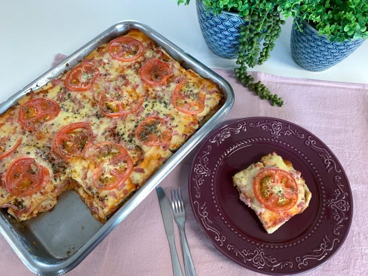
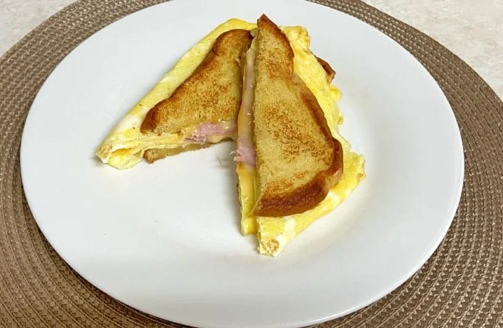

Waffle Pão de Queijo
- 90 ml de Leite
- 1 colher de sopa de manteiga
- 1/2 colher de chá de sal
- 2 colheres de sopa de parmesão ralado
- 1 xícara de chá de polvilho doce ou azedo
Bata todos ingredientes, depois junte o polvilho e misture bem. Unte a frigideira, coloque a massa e espere dourar.
Bauru de Forno
- 4 colheres de sopa de maionese
- 2 pacotes de pão de forma
- molho de tomate
- 400g de presunto
- 450g de mussarela
- tomate cortado
- orégano
Unte uma forma com maionese. Acrescente pão de forma e cubra com os ingredientes. Faça mais uma camada, deixando presunto e queijo por cima. Leve ao forno pré aquecido a 180º até a mussarela derreter.
Pãokovo
- Pão
- Ovo
- Maionese
- Frios
Frite um ovo, coloque os frios até derreter, coloque o pão com maionese, frite o pão.